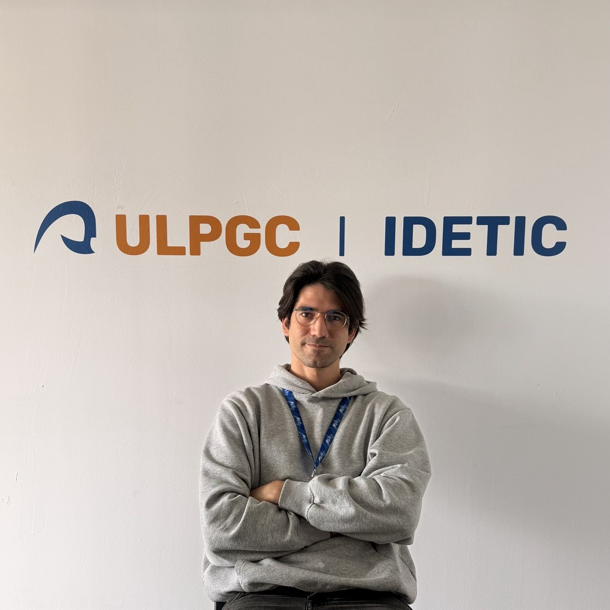
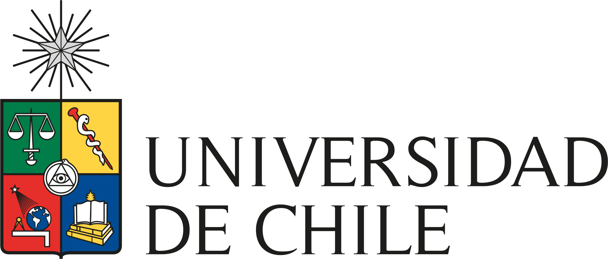

CV
Vicente Matus, PhD · IDeTIC, Universidad de Las Palmas de Gran Canaria
| Research impact | |
| h-index | 10 |
| i10-index | 11 |
| Total citations | 336 |
| Research output | |
| Peer-reviewed journals | 18 |
| International conferences | 27 |
| Co-author countries | 10+ |
Google Scholar · May 2026
Positions & education
Postdoctoral research in Optical Camera Communications and experimental optical wireless systems.
Software and hardware developer of AI-powered solutions for local businesses.

Research collaboration connected to wearable OCC and related experimental communication problems.
International research collaboration supported by COST Action CA19111 – NEWFOCUS European Network on Future Generation Optical Wireless Communication Technologies.
NEWFOCUS ↗International research collaboration under the European Union's Horizon 2020 research and innovation programme, Marie Skłodowska-Curie grant agreement No. 764461.
Completed under a Marie Skłodowska-Curie Actions fellowship.
Training in electrical engineering, instrumentation, and communication-oriented experimentation.

Prior experience
OCC for sensor networks. Chair of ECRN, SACVLC conference staff (2019, 2021), PhD students' representative. Awarded Suma Cum Laude.
Developed VLC hardware using software-defined radios (NI USRP, GNU Radio) and CAN bus vehicle communication.
Regenerative braking for waste trucks. Built telemetry platform for driving cycle tracking and energy savings estimation.
Certified LED street lighting design (DIALux) and photovoltaic system installation.
Led the electrical team installing the off-grid solar system for the School of Music and Arts.
Designed and built a Raspberry Pi device for estimating fruit quality using near-infrared spectroscopy.
10+ semesters across circuits, communications, and telecom courses. Lab equipment maintenance and student project support.
Academic service
Presided the doctoral defense of Dr. Milton Neptalí Román Cañizares: VLC Systems Assisted by Intelligent Reflecting Surfaces and Angle Diversity Receivers: An AI-Based Optimization Approach (June 2, 2026).

Research projects
Optical camera communications for satellite-oriented applications.
European training network on visible-light-based interoperability and networking.
Hybrid optical architectures for smart cities.
Collaborators
Institutions and companies from research and past work, all-time.
Universidad de Málaga EPN Ecuador
EPN Ecuador PUC de Chile
PUC de Chile Veolia
Veolia Lightning Hybrids
Lightning Hybrids Terralink
Terralink Toki Rapa Nui
Toki Rapa Nui NEWFOCUS · COSTVisionar Automatización
NEWFOCUS · COSTVisionar AutomatizaciónSkills & distinctions
Tools & platforms
Spanish & English
Spanish native speaker. English B2 (Oxford Test of English).